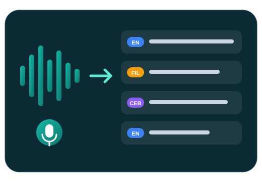

SalinTala is an AI-based transcription system for lectures that mix English, Filipino, and Cebuano, built for USTP CDO.
Upload a recording How it works
Each segment is tagged by language so you can see exactly where the lecture switched.
Find key terms and jump back to the exact moment they were said.
Uncertain words are highlighted so a person can verify them.
From recording to review in four steps.
Add a recorded class discussion.
SalinTala converts speech to text.
Search, check flagged words, fix errors.
Copy or download your notes.
Upload a class recording and see your first transcript.
Start transcribingTranscripts may contain errors. Always review them before using them as official records.